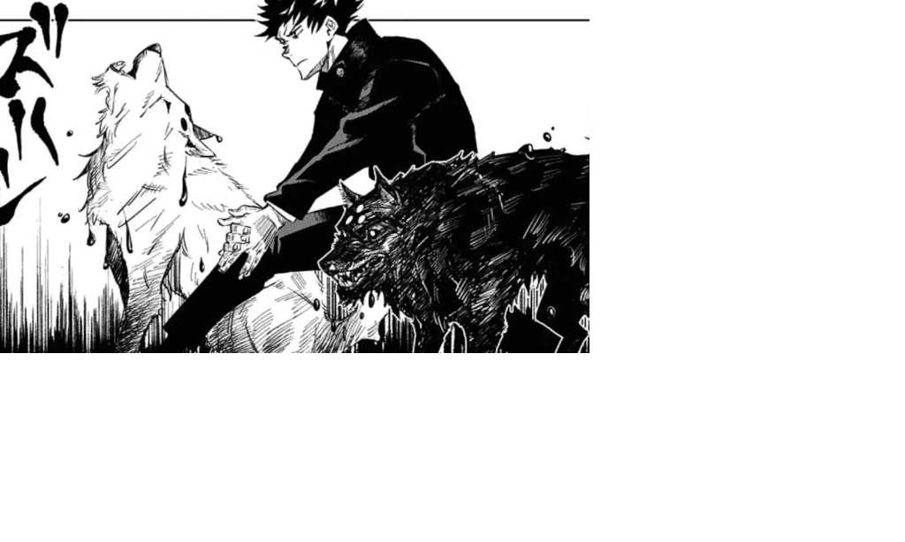
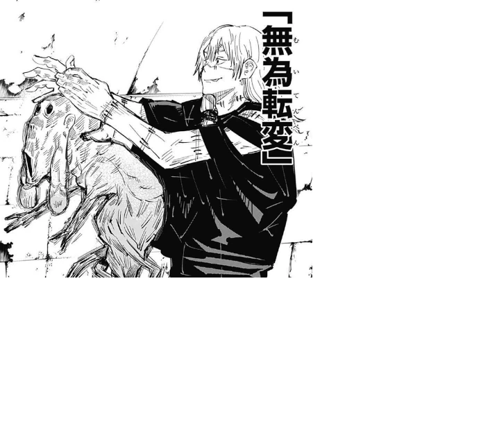

-

Ten Shadows Technique
This technique is the inherited technique of the Zenin clan which allows the user to summon ten powerful, animal-like shikigami using the medium of shadows.
-

Idle Transfiguration
This technique allows the user the ability to reshape a person's physical body by altering the shape of their soul.
-
Cursed Speech
This technique imbues the users words with cursed energy, forcing whoever hears the users voice to follow the command of the words.
Plot
Jujutsu Kaisen follows Yuji Itadori, a high schooler possessing extraordinary physical strength who lives a relatively normal life until he encounters a terrifying supernatural world. In a twist of fate, to save his friends from a monster, he swallows a rotting, cursed finger belonging to Ryomen Sukuna, the legendary King of Curses. This act of desperation binds them together, turning Yuji into a living vessel for the ancient, malevolent spirit. Now, thrust into a hidden society of Jujutsu Sorcerers, Yuji must track down and consume the rest of Sukuna's fingers to rid the world of the curse once and for all.
Power System
The power system of this world revolves around the ability to manipulate cursed energy, a power one is born with and cannot be learned by those not born with the energy. While the most elite sorcerers can use this energy to heal themselves and unleash a powerful ability called domain expansion, the most common use is through cursed techniques. Outside of a couple exceptions, every character has a unique cursed technique that is either passed down through family lineage or is just an innate power they are born with. Here are some of my favorite techniques:
Ranking System
Everything from sorcerers to the curses are ranked in a system by how powerful they are. The most powerful beings are known as Special Grade while the weakest are 4th Grade. This classification system ensures that sorcerers are assigned missions that are on par with their grade level and not too difficult.
| Grade Level | Description | Sorcerer Example | Curse Example |
|---|---|---|---|
| Special Grade | Exceptions with Immense Power | Gojo Satoru | Ryomen Sukuna |
| 1st Grade | Elite and Highly Capable | Choso Kamo | Dagon |
| 2nd Grade | Average & Most Common | Nobara Kugisaki | Ko-guy |
| 3rd & Below | Pretty Much Useless | Junpei Yoshino | Inventory Curse |